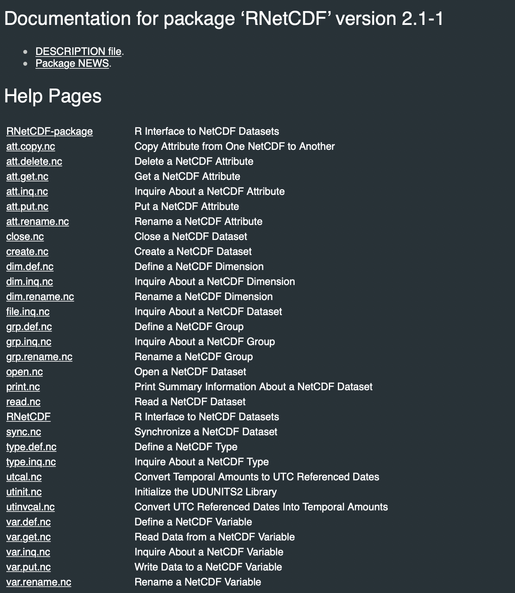
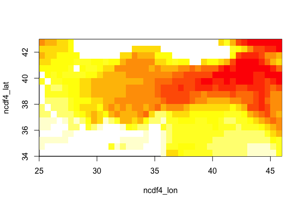
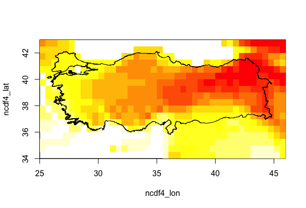

NetCDF
R Advance - ncdf4 & RNetCDF Packages

NETCDF - Data
CRU_TR_Near-Surface_Temp_16-01-1901_16-12-2012_Monthly

CRU_TR_Near-Surface_Temp_16-01-1901_16-12-2012_Monthly

R Advance - ncdf4 Package

- ncdf4_open <- nc_open(“cru_1901_2012_tmp_TR.nc”)
> ncdf4_open <- nc_open("cru_1901_2012_tmp_TR.nc")
> ncdf4_open
File ~/Desktop/Dersler/Yüksek_Lisans_Ders/Data Analysis/proje/Data_Analysis_Proje/cru_1901_2012_tmp_TR.nc (NC_FORMAT_CLASSIC):
1 variables (excluding dimension variables):
double tmp[lon,lat,time]
long_name: near-surface temperature
units: degrees Celsius
_FillValue: 9.96920996838687e+36
missing_value: 9.96920996838687e+36
correlation_decay_distance: 1200
3 dimensions:
lon Size:42
standard_name: longitude
long_name: longitude
units: degrees_east
axis: X
lat Size:18
standard_name: latitude
long_name: latitude
units: degrees_north
axis: Y
time Size:1344 *** is unlimited ***
standard_name: time
long_name: time
units: days since 1900-01-01 00:00:00
calendar: standard
10 global attributes:
CDI: Climate Data Interface version 1.6.9 (http://mpimet.mpg.de/cdi)
Conventions: CF-1.4
history: Mon Feb 22 16:24:47 2016: cdo sellonlatbox,25,46,34,43 cru_ts3.21.1901.2012.tmp.dat.nc cru_1901_2012_tmp_TR.nc
Wed 10 Jul 2013 17:04:15 BST : User ianharris : Program makegridsauto.for called by update.for
source: Run ID = 1307101324
Data generated by BADC from:
tmp.1307101049.dtb
institution: Data held at British Atmospheric Data Centre, RAL, UK.
title: CRU TS3.21 Mean Temperature
references: Information on the data is available at http://badc.nerc.ac.uk/data/cru/
comment: Data restrictions: for academic research use only.Contact BADC for details
contact: BADC <badc@rl.ac.uk>
CDO: Climate Data Operators version 1.7.0rc2 (http://mpimet.mpg.de/cdo)R Advance - RNetCDF Package

- rnetcdf_open <- open.nc(“cru_1901_2012_tmp_TR.nc”)
- print.nc(rnetcdf_open)
> rnetcdf_open <- open.nc(veri.ad)
> print.nc(rnetcdf_open)
netcdf classic {
dimensions:
lon = 42 ;
lat = 18 ;
time = UNLIMITED ; // (1344 currently)
variables:
NC_DOUBLE lon(lon) ;
NC_CHAR lon:standard_name = "longitude" ;
NC_CHAR lon:long_name = "longitude" ;
NC_CHAR lon:units = "degrees_east" ;
NC_CHAR lon:axis = "X" ;
NC_DOUBLE lat(lat) ;
NC_CHAR lat:standard_name = "latitude" ;
NC_CHAR lat:long_name = "latitude" ;
NC_CHAR lat:units = "degrees_north" ;
NC_CHAR lat:axis = "Y" ;
NC_DOUBLE time(time) ;
NC_CHAR time:standard_name = "time" ;
NC_CHAR time:long_name = "time" ;
NC_CHAR time:units = "days since 1900-01-01 00:00:00" ;
NC_CHAR time:calendar = "standard" ;
NC_DOUBLE tmp(lon, lat, time) ;
NC_CHAR tmp:long_name = "near-surface temperature" ;
NC_CHAR tmp:units = "degrees Celsius" ;
NC_DOUBLE tmp:_FillValue = 9.96920996838687e+36 ;
NC_DOUBLE tmp:missing_value = 9.96920996838687e+36 ;
NC_DOUBLE tmp:correlation_decay_distance = 1200 ;
// global attributes:
NC_CHAR :CDI = "Climate Data Interface version 1.6.9 (http://mpimet.mpg.de/cdi)" ;
NC_CHAR :Conventions = "CF-1.4" ;
NC_CHAR :history = "Mon Feb 22 16:24:47 2016: cdo sellonlatbox,25,46,34,43 cru_ts3.21.1901.2012.tmp.dat.nc cru_1901_2012_tmp_TR.nc
Wed 10 Jul 2013 17:04:15 BST : User ianharris : Program makegridsauto.for called by update.for" ;
NC_CHAR :source = "Run ID = 1307101324
Data generated by BADC from:
tmp.1307101049.dtb" ;
NC_CHAR :institution = "Data held at British Atmospheric Data Centre, RAL, UK." ;
NC_CHAR :title = "CRU TS3.21 Mean Temperature" ;
NC_CHAR :references = "Information on the data is available at http://badc.nerc.ac.uk/data/cru/" ;
NC_CHAR :comment = "Data restrictions: for academic research use only.Contact BADC for details" ;
NC_CHAR :contact = "BADC <badc@rl.ac.uk>" ;
NC_CHAR :CDO = "Climate Data Operators version 1.7.0rc2 (http://mpimet.mpg.de/cdo)" ;
}R Advance - ncdf4 VS RNetCDF
ncdf4
- class(ncdf4_open)
- str(ncdf4_open)
- attributes(ncdf4_open)
- attributes(ncdf4_open$var)
- attributes(ncdf4_open$var$tmp)
- ncdf4_open$var$tmp$longname
- ncdf4_open$var$tmp$name
- ncdf4_open$var$tmp
- ncatt_get(ncdf4_open,'tmp')
- ncvar_get(ncdf4_open,ncdf4_open$var$tmp$name)
- ncvar_get(ncdf4_open,"tmp")
- ncdf4_tmp <- ncvar_get(ncdf4_open,"tmp")
- class(ncdf4_tmp)
- dim(ncdf4_tmp)
- str(ncdf4_tmp)
- attributes(ncdf4_open)
- attributes(ncdf4_open$dim)
- ncdf4_lon <- ncvar_get(ncdf4_open, ncdf4_open$dim$lon)
- ncdf4_lat <- ncvar_get(ncdf4_open, ncdf4_open$dim$lat)
- ncdf4_time<- ncvar_get(ncdf4_open, ncdf4_open$dim$time)
RNetCDF
rnetcdf_open <- open.nc(data_name)
class(rnetcdf_open)
str(rnetcdf_open)
rnetcdf_read <- read.nc(rnetcdf_open)
class(rnetcdf_read)
str(rnetcdf_read)
attributes(rnetcdf_read)
var.get.nc(rnetcdf_open,'tmp')
rnetcdf_tmp <- var.get.nc(rnetcdf_open,'tmp')
class(rnetcdf_tmp)
dim(rnetcdf_tmp)
str(rnetcdf_tmp)
attributes(rnetcdf_open)
attributes(rnetcdf_read)
rnetcdf_lon <- var.get.nc(rnetcdf_open, "lon")
rnetcdf_lat <- var.get.nc(rnetcdf_open, "lat")
rnetcdf_time<- var.get.nc(rnetcdf_open, "time")R Advance - ncdf4 Package
- rnetcdf_time_julian <- as.Date(rnetcdf_time, origin=as.Date("1900-01-01"))
- ncdf4_time_julian <- as.Date(ncdf4_time, origin=as.Date("1900-01-01"))
- ncdf4_tmp <- ncvar_get(ncdf4_open,"tmp")
- ncdf4_tmp[,,1]
- ncdf4_tmp_mean <- ncdf4_tmp[,,mean(1:1344)]
- image(ncdf4_lon, ncdf4_lat, ncdf4_tmp_mean)

- install.packages("maptools")
- library("maptools")
- turkey_shp <- readShapePoly("turkiye.shp")
- image(rnetcdf_lon, rnetcdf_lat, ncdf4_tmp_mean)
- plot(turkey_shp, add = T)
- library("fields")
- image.plot( rnetcdf_lon, rnetcdf_lat, ncdf4_tmp_mean,
xlab = "Lon",
ylab = "Lat",
main = "Mean Temperature for Turkey" )
- plot(turkiye.shp, add = T)